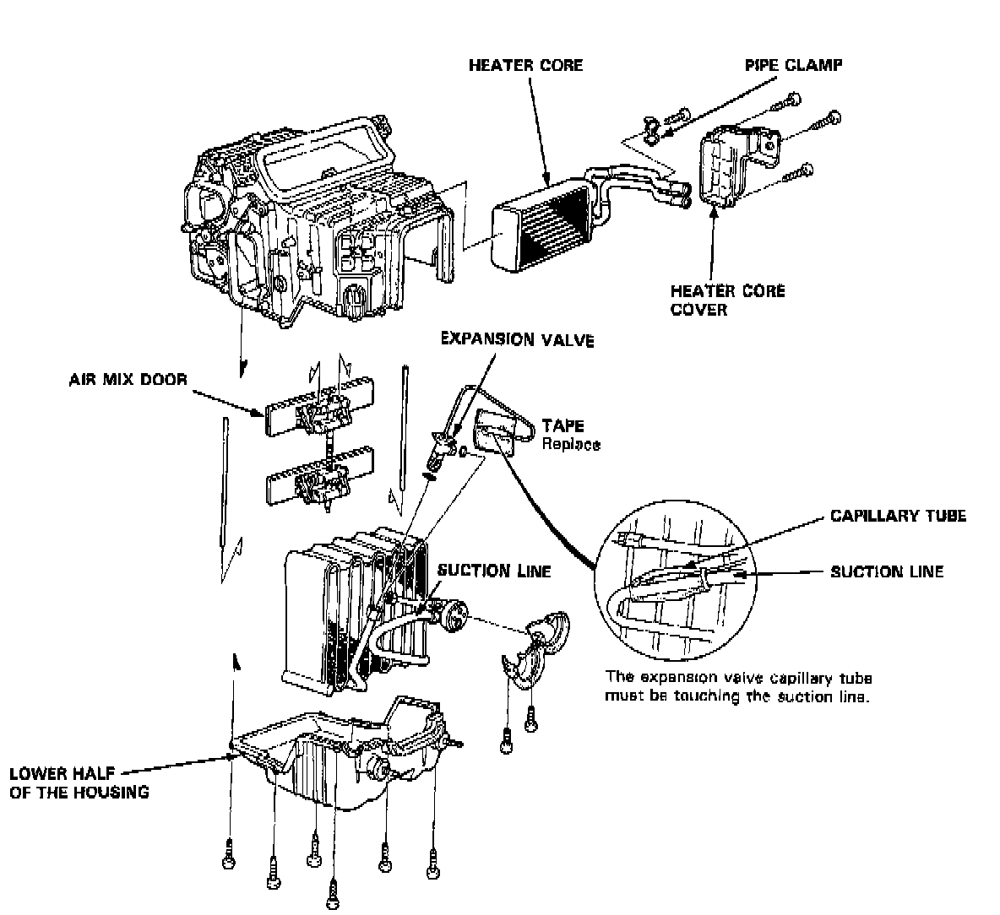

Heater-Evaporator Unit Overhaul
Heater-Evaporator UnitEvaporator Case Components:

Disassembly/Reassembly
1. Remove the heater core cover, remove the pipe clamp, then pull out the heater core.
2. Remove the lower half of the housing, then remove the evaporator.
3. Remove the expansion valve if necessary.
4. Assemble the heater-evaporator unit in the reverse order of disassembly. Hold the expansion valve capillary tube down against the suction line, and wrap it with tape to hold it there.